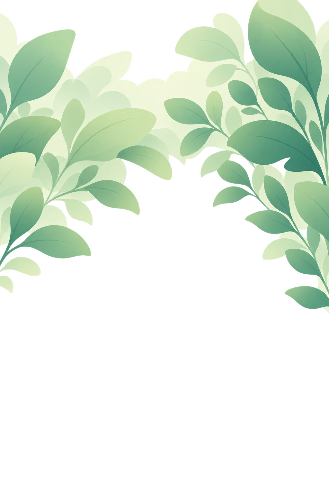
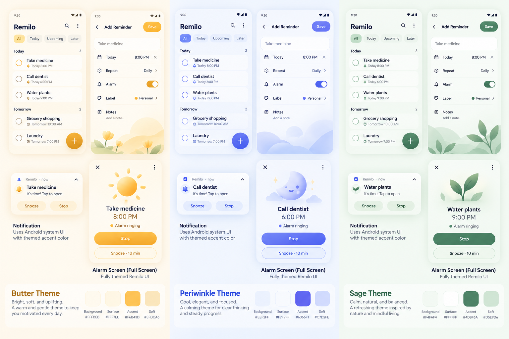
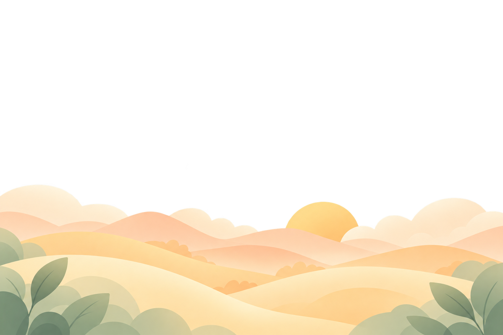

Meadow foliage and Sunrise landscapes
The original references remain the primary visual quality targets. These are standalone decorative artwork sources generated with the supplied images attached directly as references.
All four sources are preserved unmodified. No RN/Compose integration, production UI change, full catalog, dark variant generation or P02 work is included.
Source hashes and provenanceAssessment and promptsBounded r2 approvalEvidence and limits
Preview only: transparent sources are displayed over Meadow #F5FAF6 or Sunrise #FFFBF2 so the artwork can be judged without a black transparency viewer. These background colors are presentation aids, not final tokens. Click any candidate to open its full-resolution original. Source canvas proportions are not final screen layouts.
Meadow · two environmental compositions
165×310; enlarged for comparison

Judge rounded asymmetric leaf shapes, overlapping plants, gentle depth and a quiet region for information. Reference text/buttons are not generated into the candidates.
Original time/alarms board
Original Butter/Periwinkle/Sage board

Top-center anchor · standalone art

Assessment: balanced broad foliage and recognizable silhouettes; strongest starting recommendation for a cohesive Meadow environment. Upper clusters are denser and veins more apparent than the small reference. Side leaves still need clearance from long titles.
Exact M1 promptTop-center anchor · standalone art


Assessment: stronger diagonal/right-hand rhythm, a slightly more open upper center and broad environmental coverage. The right-side leaf mass extends farther down; crop and text clearance will need particular attention.
Exact M2 promptSunrise · two broad landscapes
Open originals for full context


The target is broad warm terrain, simple layered forms and an integrated sun. The Butter source's flowers are not an additional required subject.
Morning crop: x26, y576, 227×92.Butter crop: x273, y355, 228×112.
Bottom-center anchor · standalone art

Assessment: closest to the Morning board's simple warmth and sun/ray vocabulary. Clear layered hills with relatively quiet foreground; recommended first Agenda source. Cloud groups are fuller than the reference's lower landscape and must remain subordinate.
Exact S1 promptBottom-center anchor · standalone art


Assessment: stronger connection to the Butter editor and Meadow's botanical vocabulary. Richer foreground and a smaller rayless sun. Leaves are larger and grayer than the reference's delicate corner plants; the Add/control region needs a quiet surface and careful crop.
Exact S2 promptComposition guides · future integration proposals
No product controls or UI mockups are added here. These source-space diagrams explain crop anchors and where the artwork leaves room for later real components. They do not prove text contrast or final layout.
Meadow source
Sunrise source
What the artwork establishes—and what still needs proof
| Dimension | Observed / assessed now | Later actual-component gate |
|---|---|---|
| Artistic similarity | Soft 2D leaf/hill silhouettes, modest gradients, layered environmental coverage; no centered clay object. Similarity is a designer assessment awaiting owner judgment. | Selected sources must support an equally coherent UI layout; pastel colors alone are insufficient. |
| Source integrity | Four distinct PNGs copied unchanged from built-in imagegen outputs; true alpha, no generated text/UI/logo. Exact prompts and direct reference hashes retained. | Exports and RN/debug Compose parity follow selected-art approval; no broad exporter now. |
| Content-safe regions | Meadow lower center is essentially transparent; Sunrise upper space is essentially transparent. Side foliage/hill placement remains a proposed composition. | Measure real title/action bounds and composited contrast; reflow at 200%, dark and expanded layouts. |
| Crop limitations | Meadow 2:3 sources and Sunrise 3:2 sources are decorative layers, not phone canvases. Landscape mass occupies the lower part of its own source. | Uniform scaling/cropping may need adjustment to achieve the desired visible scene coverage; never stretch hills/leaves to force the target. |